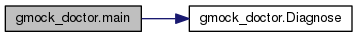

YOUR NAME's CS132 programs
Main Page
Namespaces
Classes
Files
def gmock_doctor.main
(
)
Definition at line
594
of file
gmock_doctor.py
.
References
Diagnose()
.
594
def
main
():
595
print
(
'Google Mock Doctor v%s - '
596
'diagnoses problems in code using Google Mock.'
% _VERSION)
597
598
if
sys.stdin.isatty():
599
print
(
'Please copy and paste the compiler errors here. Press c-D when '
600
'you are done:'
)
601
else
:
602
print
(
'Waiting for compiler errors on stdin . . .'
)
603
604
msg = sys.stdin.read().strip()
605
diagnoses =
Diagnose
(msg)
606
count = len(diagnoses)
607
if
not
count:
608
print
(
"""
609
Your compiler complained:
610
8<------------------------------------------------------------
611
%s
612
------------------------------------------------------------>8
613
614
Uh-oh, I'm not smart enough to figure out what the problem is. :-(
615
However...
616
If you send your source code and the compiler's error messages to
617
%s, you can be helped and I can get smarter --
618
win-win for us!"""
% (msg, _EMAIL))
619
else
:
620
print
(
'------------------------------------------------------------'
)
621
print
(
'Your code appears to have the following'
,)
622
if
count > 1:
623
print
(
'%s diseases:'
% (count,))
624
else
:
625
print
(
'disease:'
)
626
i = 0
627
for
d
in
diagnoses:
628
i += 1
629
if
count > 1:
630
print
(
'\n#%s:'
% (i,))
631
print
(d)
632
print
(
"""
633
How did I do? If you think I'm wrong or unhelpful, please send your
634
source code and the compiler's error messages to %s.
635
Then you can be helped and I can get smarter -- I promise I won't be upset!"""
%
636
_EMAIL)
637
638
gmock_doctor.Diagnose
def Diagnose(msg)
Definition:
gmock_doctor.py:577
gmock_doctor.main
def main()
Definition:
gmock_doctor.py:594
Here is the call graph for this function:

gmock_doctor
Generated on Mon Oct 21 2019 15:37:36 for YOUR NAME's CS132 programs by
1.8.11
 Here is the call graph for this function:
Here is the call graph for this function: 1.8.11
1.8.11